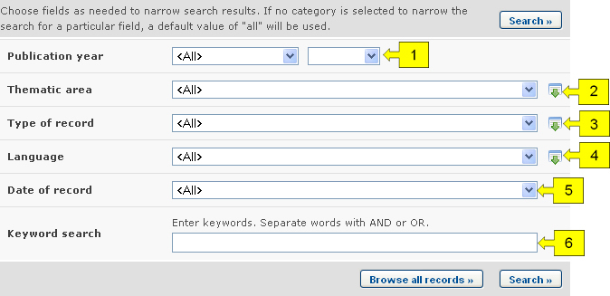
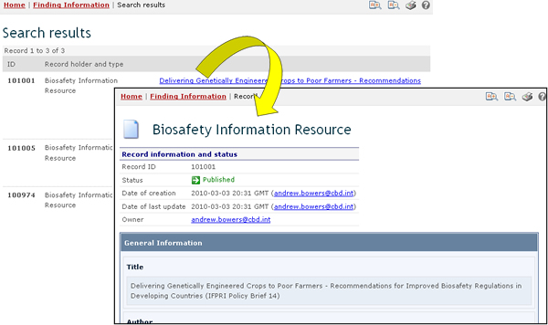

URL: http://bch.cbd.int/database/resources/
Article 20 of the Protocol establishes the BCH to facilitate the exchange of information and experience with LMOs among Parties in order to assist them in implementing the Protocol. To help fulfill this role, the BCH contains information submitted by Parties, governments and organizations that is relevant to biosafety and implementation of the Protocol.
The Biosafety Information Resource Centre (BIRC) contains electronic catalogues of biosafety-related publications and information resources for policymakers, educators, researchers, and the general public. BIRC records may be registered by all BCH account-holders.
The search page for the BIRC can be accessed from the Finding Information drop down menu on the navigation bar, or from the link in the left-hand menu of the Finding Information page, or from Biosafety Information Resource Centre link in the text of that page.

These links enable users to access electronic catalogues of biosafety-related publications and information resources as follows:
-
News services (including email listservs);
-
Online databases and search engines;
-
Reports and case studies;
-
Journals;
-
Newsletters;
-
Teaching materials (including manuals, toolkits and presentations).
On the Search the Biosafety Information Resource Centre (BIRC) page there are several search criteria boxes:
-
Publication year: Selection lists to narrow search results by year of publication. The first selection list specifies whether resources published earlier or later than the date specified in the second box are to be considered. If any of the two selection lists is left empty, then this field will not narrow the search results.
-
Thematic area: Selection list to narrow the search results to resources regarding the specified subjects.
-
Type of record: Selection list to specify the types of resources to be included in the search results.
-
Language: Selection list to narrow the search results to resources in the specified languages.
-
Date of record: Date field for narrowing the search results to a time interval
-
Keyword search: Keyword field for narrowing the results by keyword
See “Using the search pages” to learn about types of fields and their operation.

Example: A user wishes to identify articles written recently about liability issues. The user selects (i) later than and 2009 in the publication year boxes and (ii) Liability and redress in the Thematic area box. Clicking on the Search button, calls up the search results. The results are presented in alphabetical order based on the titles of the articles.


This picture was taken on February 2010 with the only purpose of providing an example on the usage of the BCH.